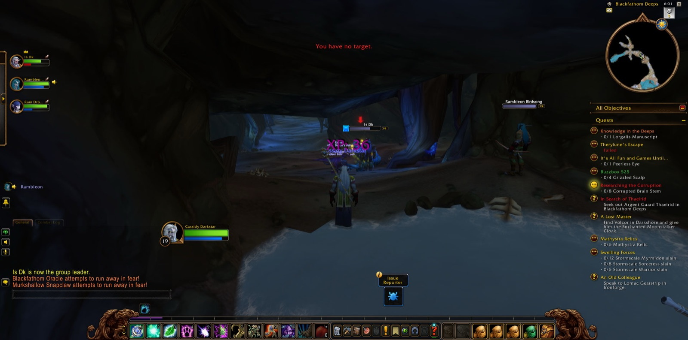
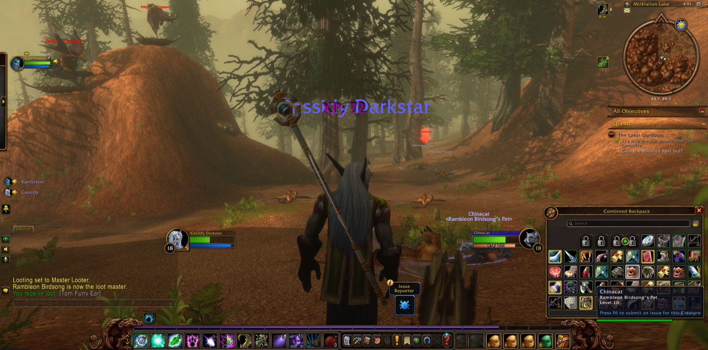
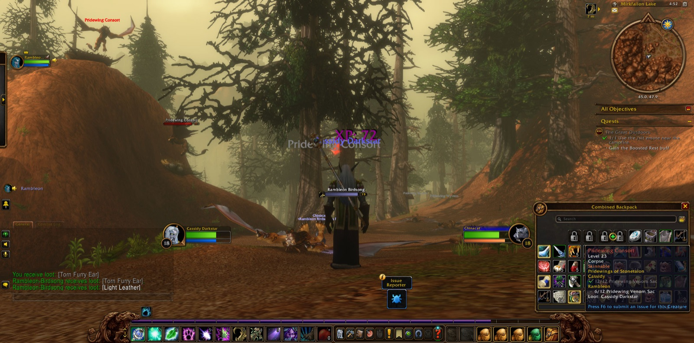
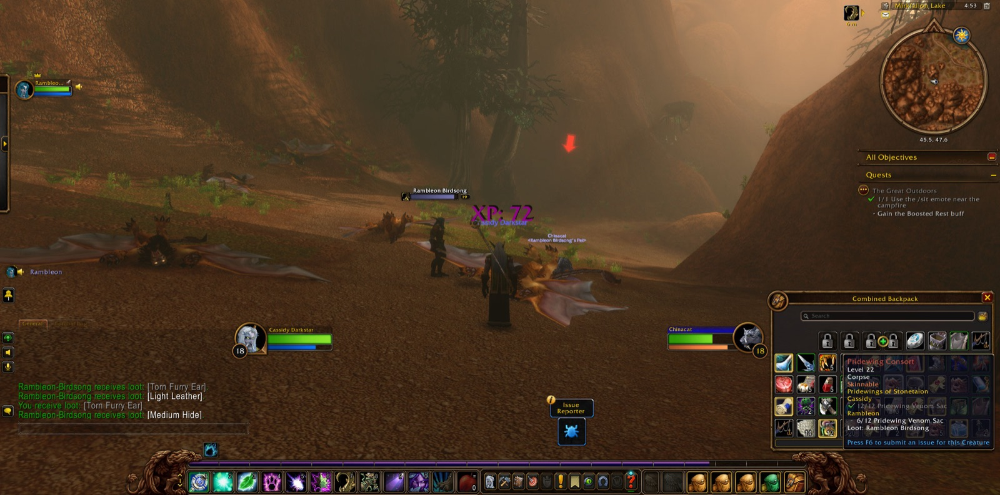

Cassidy Darkstar took up the road again at Mirkfallon Lake, in the Stonetalon Mountains. There he joined forces with Rambleon, a Hunter, and they kept company from the first step of the chapter to the last. He fell once near the water and came back, and the two of them turned to the task that had brought them there. Many Pridewing Wyverns fell to them, and many Pridewing Consorts with them, and in the midst of that long hunt a Blackened Basilisk was brought down as well. Cassidy took picture after picture beside the lake, as a traveller does when he means to remember a place.


When the hunt was done they climbed to Stonetalon Peak, where a Sap Beast fell before them, and there *Journey to Stonetalon Peak* was seen through. From the heights they went down to the Veiled Sea and the Zoram Strand, and on into Ashenvale by Lake Falathim and Maestra's Post, until they came to Astranaar. At Astranaar *Pridewings of Stonetalon* was finished, and Cassidy came into his nineteenth level. He marked that moment with a picture.


The road then bent north. By Twilight Vale, Twilight Shore and the Long Wash they came to Auberdine in Darkshore, and after a short stay they went south again to Remtravel's Excavation. Two more joined them there: Raín, a Hunter, and Is, a Warrior. For a short stretch of the road the four fought side by side. Cracked Golems and Stone Behemoths fell, and Gravelflint Scouts, and one Gravelflint Geomancer. Then the company went down by the Zoram Strand to the mouth of Blackfathom Deeps, and at its threshold Cassidy took on the errand called *Knowledge in the Deeps*.


Within the Deeps they slew Murkshallow Snapclaws, and they went on into the Drowned Sacellum. A Skittering Crustacean fell there, and a Blindlight Murloc, and Cassidy kept a record of the place in many pictures. The Sacellum claimed him before the errand was done, and when he stood again at the edge of the Deeps, Is and Raín went their own ways. He bore them good will for the road they had shared.


After that Cassidy turned homeward. He passed through Craftsmen's Terrace and the Cenarion Enclave in Darnassus, went down to Rut'theran Village in Teldrassil, and crossed the Veiled Sea to Mist's Edge and the Long Wash in Darkshore. Rambleon was still at his side when at last they came over the water to Stormwind Harbor. The errand in the Deeps was still unfinished, and the roads of the eastern kingdoms lay open before them.




